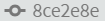
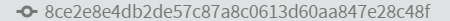

6.3.3
Viewing the commit history
Seeing the commit history is easy, just click the  () button. It opens the current history in the Git pane:
() button. It opens the current history in the Git pane:
Figure 6.28 Brackets, post commit detail
There are a couple of things to see here, first is the commit number on the right, in my case it is [8ce2e8e]. The second is the commit message, it shows the first line of the commit message we entered in the previous section.
It also shows who made the commit (practicalseries-lab) and when (if you don’t like the 2 hours ago style, it can be changed, see § 7.1.1). The white on an orange background is generated by Brackets, it is just the first letter of the username on a coloured background—it allows commits made by different users to be readily identified.
Clicking anywhere on a commit line in the Git pane, opens a larger commit information pane above it. I.e.:
Figure 6.29 Commit information
Let’s concentrate on the information pane, make it a bit bigger:
Figure 6.30 Commit information in full
Let’s start at the top; it shows the Brackets generated icon for the user () followed by the username, email address and the time of the commit.
The next thing is the commit number, mine is: 
This is the seven digit short form of the commit number. If you click the three blue dots following it, you get the full 40 digit hash (SHA-1) number (see § 2.2.2 for an explanation). In my case this is it:

I’m going to ignore the and buttons; these are to do with moving to earlier commit points and I cover this in section 7 (If you can’t see the buttons, you probably haven’t activated one of the options, again it’s in section 7).
Next is the commit message in full, the first line of the commit message is shown as a heading.
Underneath this is a list of all the files that were in the commit. If you click the small arrow on the left of the file name, it expands the file showing the changes that were made at the time of the commit. In Figure 6.30 I’ve expanded the .gitignore file. If you click the button at the top, it expands all files in the commit.
Finally, the little eye symbol , This opens the current version of the file in the Brackets editor (if the file is already opened in Brackets, then the button doesn’t do anything).


{kind=link}
{kind=link}
{kind=link}
{kind=link}
{kind=link}
{kind=link}
{kind=link}
{kind=link}
{kind=link}
{kind=link}
{kind=link}
{kind=link}
{kind=link}